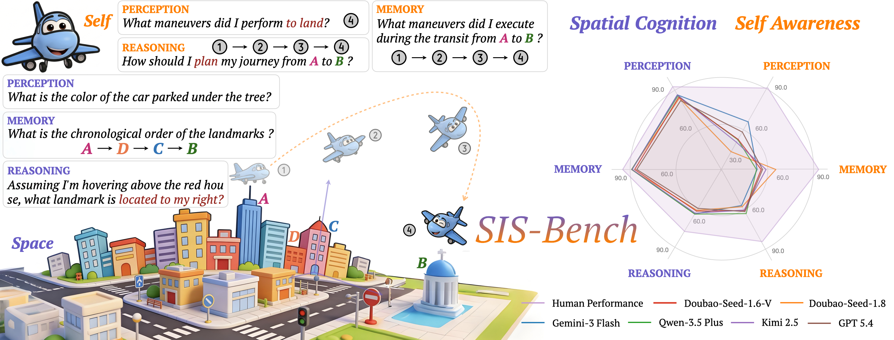
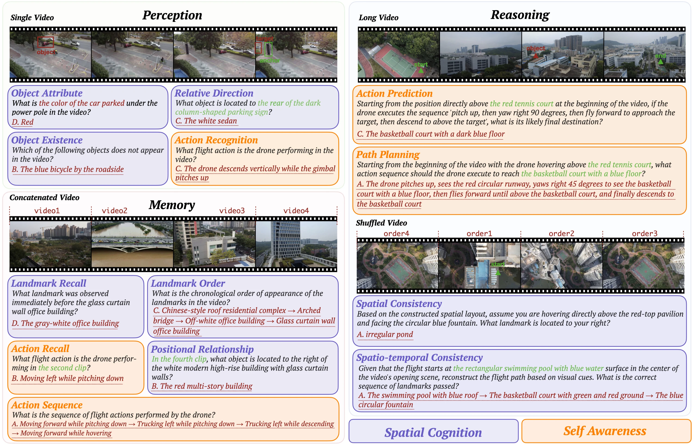
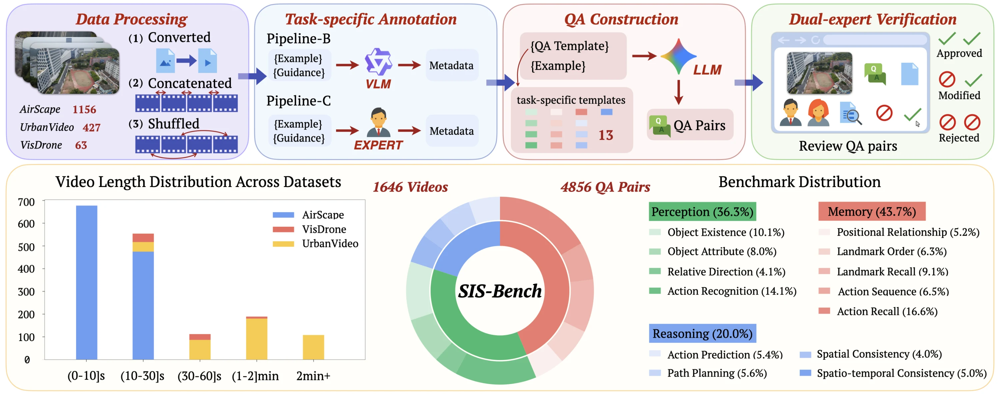
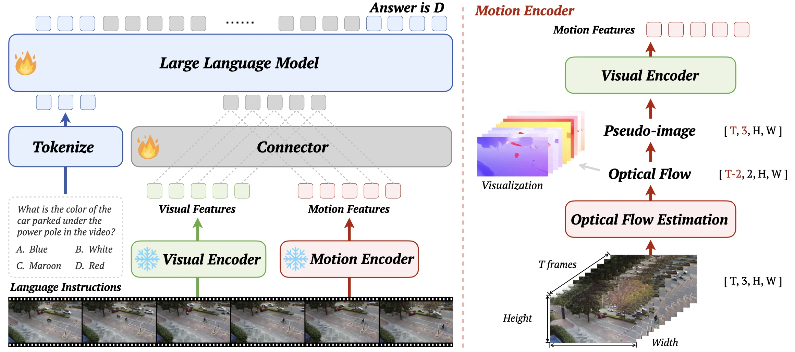
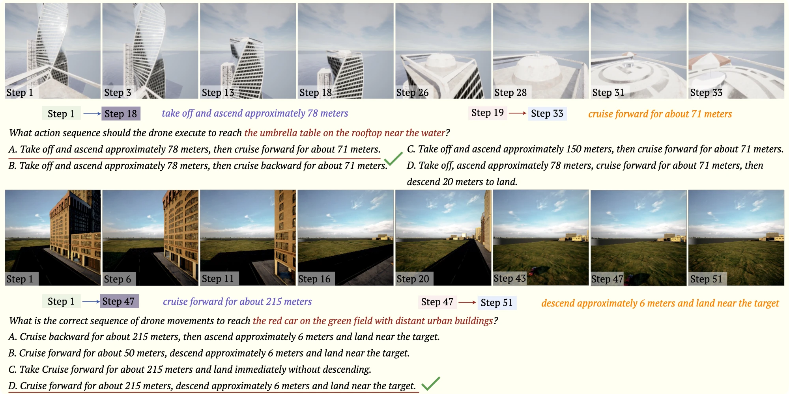

Self in Space:Towards Self-Awareness and Spatial Cognition in Aerial Understanding
01Self in Space. We investigate aerial vision-language models along two parallel dimensions: spatial cognition of the surrounding environment and coherent self-awareness of their own motion in dynamic scenes.
02SIS-Bench. We introduce a benchmark with 4,856 QA pairs from 1,646 real-world UAV videos, covering 13 tasks over spatial cognition and self-awareness under a perception-memory-reasoning hierarchy.
03Systematic Diagnosis. We evaluate 26 video MLLMs, including 6 proprietary and 20 open-source models, and reveal two consistent limitations: weaker modeling of self than space, and progressive degradation from perception to memory to reasoning.
04SIS-Motion. Motivated by these findings, we conduct a controlled motion-aware exploration, showing improved spatial cognition and self-awareness on SIS-Bench, with transfer to downstream UAV navigation tasks.
1Beijing University of Posts and Telecommunications2Hunan Normal University3Tsinghua University
Introduction
Driven by advances in lightweight hardware, battery technology, and manufacturing, unmanned aerial vehicles (UAVs) are now widely deployed in urban monitoring, infrastructure inspection, and emergency response. As these applications become more complex, UAV systems require stronger perception, reasoning, and decision-making capabilities. Multimodal large language models (MLLMs), which unify visual perception and language reasoning, create new opportunities for more capable aerial intelligence.
Recent UAV-oriented MLLMs have advanced from aerial perception to navigation and embodied tasks. However, existing studies remain largely environment-centered and task-oriented: they emphasize how a UAV understands its surroundings or completes a predefined objective, while leaving the UAV's own state implicit. Real aerial operation is instead a continuous agent-environment interaction, where the UAV is both an observer of space and an active entity evolving within it. Embodied aerial intelligence therefore requires joint modeling of the external environment (space) and the agent's own state (self).
Viewed from this perspective, embodied intelligence is not only about understanding the world, but also about understanding the agent within the world—what we refer to as self in space. This raises a central question: how well do MLLMs jointly model the external environment, the UAV self-state, and the interaction between them?
To answer this question, we introduce SIS-Bench (Self-In-Space Benchmark). It evaluates UAV embodied intelligence along two complementary dimensions—spatial cognition and self-awareness—under a three-level hierarchy of perception, memory, and reasoning. SIS-Bench contains 4,856 QA pairs across 13 tasks, derived from 1,646 real-world UAV videos through task-specific annotation and dual-expert verification.
Our evaluation of 26 MLLMs reveals two consistent limitations: models are weaker at modeling self than space, and performance progressively degrades from perception to memory to reasoning. Motivated by this diagnosis, we conduct a controlled motion-aware exploration through SIS-Motion, which fuses optical-flow motion features with visual embeddings. Explicit motion cues improve both spatial cognition and self-awareness on SIS-Bench, and the gains transfer to downstream UAV navigation.

Figure 1: Overview of SIS-Bench for Spatial Cognition and Self-Awareness. The left illustrates representative capabilities across space and self under the perception–memory–reasoning hierarchy. The right compares human performance with six proprietary MLLMs, exposing the gap between spatial cognition and self-awareness.
SIS-Bench
SIS-Bench systematically studies UAV embodied spatial intelligence by decomposing it into structured and measurable components. Rather than evaluating isolated perception or reasoning skills, the benchmark captures how a UAV jointly models the external environment and its own evolving action state in realistic embodied scenarios.
Design Principles
Self-in-Space Dual-Dimension. SIS-Bench evaluates two complementary dimensions. Spatial cognition measures understanding of objects, landmarks, spatial relations, and scene consistency in the external environment. Self-awareness measures understanding of the UAV's own motion, action history, and future behavior. Together, they test whether a model can represent space, self, and their interaction.
Hierarchical Cognitive Design. Each dimension is organized into three progressive levels. Perception covers Object Existence, Object Attribute, Relative Direction, and Action Recognition. Memory covers Landmark Recall, Landmark Order, Positional Relationship, Action Sequence, and Action Recall. Reasoning covers Spatial Consistency, Spatio-temporal Consistency, Action Prediction, and Path Planning. This hierarchy traces the progression from immediate observation to temporal retention and structured inference.
Task-conditioned Video Construction. Four video types match the temporal demands of different tasks: Single Video for instantaneous perception, Concatenated Video for cross-segment memory, Long Video for long-horizon action reasoning, and Shuffled Video for recovering spatial and temporal consistency beyond the observed input order.

Figure 2: Task illustrations of SIS-Bench. The benchmark evaluates 13 tasks across spatial cognition and self-awareness under three cognitive levels. Perception uses Single Video inputs, Memory uses Concatenated Video inputs, and Reasoning uses Long Video and Shuffled Video inputs.
Benchmark Construction Pipeline
SIS-Bench follows a four-stage protocol: Data Processing, Task-specific Annotation, QA Construction, and Dual-expert Verification. The pipeline aligns heterogeneous video sources with task requirements while preserving annotation quality and answer reliability.
Data Processing. AirScape, UrbanVideo-Bench, and VisDrone are converted, concatenated, or shuffled into task-aligned video inputs.
Task-specific Annotation. Existing action labels, VLM-assisted metadata generation, and UAV-expert annotation are assigned to tasks according to their complexity and hallucination risk.
QA Construction. Verified metadata is converted into multiple-choice QA pairs using task-specific templates and LLM assistance, with manually controlled distractors.
Dual-expert Verification. Two experts independently review every candidate. Disagreements are discussed and revised or discarded, enforcing question validity, answer uniqueness, and consistent difficulty.

Figure 3: SIS-Bench construction pipeline and statistics. The upper panel presents the four-stage construction protocol. The lower panel summarizes video duration, source composition, and the distribution of 4,856 QA pairs across 13 tasks.
Benchmark Statistics
Multi-level and multi-capability evaluation. The 13 tasks jointly cover direct recognition, cross-segment memory, and higher-level inference. Perception contributes 36.3% of the benchmark, Memory 43.7%, and Reasoning 20.0%, producing a cognitively progressive evaluation.
Multi-source and multi-type video data. SIS-Bench contains 4,856 multiple-choice QA pairs from 1,646 real-world UAV videos collected from AirScape, UrbanVideo-Bench, and VisDrone. The videos span approximately 14.9 hours across urban, residential, industrial, and natural environments, and combine Single, Concatenated, Long, and Shuffled Video structures.
Below, we present six representative UAV videos sampled from common SIS-Bench environments. They span urban squares, residential neighborhoods, construction zones, school campuses, lakeside scenes, and low-light flight, illustrating the diverse spatial layouts and motion patterns evaluated by the benchmark.
The selected video plays at 2× speed by default. Use the controls above to switch scenes or adjust playback speed.
Evaluation
Evaluation Setup
Benchmark Models. We evaluate 26 video-capable MLLMs: 6 proprietary models and 20 open-source models spanning different families, parameter scales, and training paradigms. The proprietary set includes Gemini-3-Flash, GPT-5.4, Kimi-2.5, Doubao-Seed-1.8, Doubao-Seed-1.6-Vision, and Qwen3.5-Plus. The open-source set covers Qwen2/2.5/3-VL, InternVL2.5/3/3.5, GLM-4V, Kimi-VL, MiMo-VL, Ovis2.5, and Step3-VL variants.
Evaluation Protocol. All models are evaluated zero-shot with deterministic decoding. Videos are adaptively sampled to at most 32 frames: 2 FPS below 16 seconds, 1 FPS from 16 to 32 seconds, and uniform 32-frame sampling for longer inputs. Open-source models run through vLLM on four RTX 4090 GPUs with a 32,768-token context window and up to 128 generated tokens; proprietary models use API inference under the same benchmark protocol.
Evaluation Metric. Since SIS-Bench consists of four-choice questions, we report task-level accuracy together with aggregate Perception, Perception+Memory, and Overall accuracy.
Full Results on SIS-Bench
Full results on SIS-Bench. Accuracy (%) across 13 tasks for 6 proprietary and 20 open-source MLLMs. The best, second-best, and third-best model performances in each column are highlighted in red, green, and blue, respectively; Random and Human Performance are excluded from ranking. Scroll horizontally to inspect all task-level results.
Model
Aggregate
Spatial Cognition
Self-Awareness
Summary
Perception
Memory
Reasoning
Perception
Memory
Reasoning
Perc.
Perc.+Mem.
Overall
Obj Exist
Obj Attr
Rel Dir
Land Order
Land Recall
Pos Rel
Spat Consist
ST Consist
Act Recog
Act Seq
Act Recall
Act Pred
Path Plan
Random
24.8
25.0
25.0
24.7
24.9
24.9
25.2
25.2
25.1
25.0
25.2
24.7
25.3
25.0
24.9
25.2
Human Performance
93.4
94.2
91.7
95.9
96.6
84.4
97.0
93.8
94.6
88.3
68.8
92.4
96.6
94.1
86.9
83.6
Proprietary Models
Gemini-3-Flash
79.1
74.4
71.6
97.2
80.6
75.0
94.4
84.0
89.7
71.8
57.7
66.5
84.1
42.4
61.6
53.7
Kimi-2.5
73.0
73.2
71.0
97.0
78.0
80.5
98.0
81.9
87.3
76.4
53.1
50.9
77.8
53.0
65.4
57.0
Doubao-Seed-1.8
68.7
73.3
70.6
97.4
72.6
76.5
96.1
84.4
87.7
66.2
57.3
43.7
85.1
59.2
63.1
54.0
Qwen3.5-Plus
73.3
71.7
70.1
97.6
76.2
78.5
97.7
83.3
87.7
75.9
54.8
52.8
82.5
42.4
69.2
58.5
GPT-5.4
73.7
72.2
70.0
98.4
74.9
67.0
94.8
78.6
86.9
64.1
57.3
57.3
77.8
49.9
65.8
58.8
Doubao-Seed-1.6-Vision
72.8
71.8
69.8
97.4
73.9
78.0
94.4
81.0
87.7
72.3
53.5
53.1
77.1
48.9
65.8
57.4
Open-source Models
Qwen3-VL-8B-Instruct
74.9
67.0
64.6
97.2
82.2
73.5
95.8
74.9
82.9
64.6
51.0
55.1
60.3
32.2
57.0
48.9
Qwen3-VL-8B-Thinking
72.3
66.5
64.7
95.5
76.0
72.5
95.1
78.6
79.8
64.6
55.6
53.4
62.9
33.6
64.6
46.3
Qwen3-VL-4B-Instruct
73.3
65.1
62.5
96.3
80.4
71.0
93.8
70.7
82.1
73.3
47.3
53.4
61.3
29.1
57.0
36.4
InternVL3.5-8B
73.4
64.0
61.1
96.1
76.5
70.5
86.3
72.0
73.8
55.4
47.3
56.1
52.4
31.8
55.1
41.9
Qwen3-VL-30B-A3B-Instruct
68.7
62.5
61.0
97.2
78.6
79.0
95.1
76.5
85.3
67.7
47.7
39.7
44.8
28.4
59.7
48.9
GLM-4.1V-9B-Thinking
69.5
62.9
60.4
92.1
77.5
72.0
93.5
64.1
75.4
63.6
49.8
48.1
55.9
34.8
48.7
43.4
Step3-VL-10B
69.6
62.1
60.3
95.1
72.4
68.5
94.1
72.2
67.5
64.1
54.4
50.0
55.9
28.6
54.4
42.3
MiMo-VL-7B-RL
68.9
61.1
59.2
96.3
74.2
73.5
80.1
75.2
81.3
72.3
47.3
44.8
43.2
29.7
51.7
40.8
GLM-4.6V-Flash-9B
73.2
61.9
59.6
96.5
79.1
66.0
89.5
44.9
65.1
64.6
41.9
55.2
56.2
37.1
55.1
43.4
InternVL3-14B
68.5
61.6
59.1
96.3
77.5
71.0
94.8
79.7
81.3
67.7
46.1
42.7
43.8
24.9
55.5
31.6
Kimi-VL-A3B-Instruct
68.5
61.7
59.0
95.1
76.5
70.0
87.9
74.3
79.4
66.7
45.6
44.6
42.5
31.8
57.4
27.9
MiMo-VL-7B-SFT
68.7
60.7
58.8
96.3
73.9
72.0
80.7
72.0
80.6
71.3
44.4
44.9
43.8
29.7
51.3
42.3
Ovis2.5-9B
71.8
60.3
58.5
96.7
79.1
69.5
76.5
63.9
73.0
58.5
46.1
50.6
50.5
26.7
60.1
41.5
InternVL2.5-8B
71.0
61.0
58.2
95.3
82.9
67.0
85.3
66.6
79.0
61.0
50.2
48.0
29.5
33.2
53.2
29.0
InternVL3.5-4B
72.3
60.4
58.0
96.5
78.3
70.5
88.9
61.2
71.0
55.4
51.9
52.0
33.3
30.2
56.7
33.1
InternVL3-9B
67.2
59.3
57.3
95.3
73.6
74.0
84.3
71.1
79.0
63.1
46.5
41.4
38.4
28.2
57.0
34.6
Qwen2.5-VL-7B-Instruct
67.1
57.5
55.8
96.5
71.1
69.0
73.2
54.2
69.0
67.7
41.5
43.3
55.6
29.2
60.8
31.6
Qwen2.5-VL-3B-Instruct
58.6
56.2
53.6
92.7
48.8
64.5
90.8
51.9
62.7
57.4
42.7
37.9
62.5
35.6
53.6
23.2
Qwen2-VL-7B-Instruct
59.5
54.8
53.2
96.7
48.3
61.0
71.6
58.0
69.0
63.6
47.3
38.6
51.4
33.3
58.9
22.1
Qwen3-VL-2B-Instruct
63.0
54.2
50.5
97.4
76.2
63.0
54.2
53.3
74.2
61.5
26.1
31.0
54.0
29.2
42.2
19.9
What Do the Results Reveal?
A substantial gap to the human upper bound. Human evaluators reach 91.7% overall accuracy, while the best MLLM reaches 71.6%. The gap of more than 20 points shows that SIS-Bench remains far from saturated, especially on self-awareness and reasoning tasks.
An imbalance between spatial cognition and self-awareness. Across model families, MLLMs are better at interpreting external scenes—objects, attributes, layouts, and landmarks—than at modeling the UAV's own motion state, action history, and dynamics. Current aerial models remain predominantly environment-centric.
Progressive degradation across the cognitive hierarchy. Performance is strongest on perception, drops on memory, and declines further on reasoning. Immediate recognition is comparatively mature, but maintaining temporally distributed evidence and integrating it into coherent spatial or action-level inference remain difficult.
Scaling alone does not solve agent-centered modeling. Proprietary models generally lead in overall accuracy, but improvements are uneven and much smaller than the remaining human gap. Stronger models improve general recognition and some spatial reasoning, yet gains are limited on UAV motion, action recognition, and action recall.
These findings point to a missing capability: explicit modeling of self-related dynamics. Because every change in the UAV's self-state alters how the surrounding space is observed, we next ask whether motion-aware cues can improve the joint modeling of self and space.
A Controlled Motion-Aware Exploration of Self in Space
Spatial cognition and self-awareness are inherently coupled in embodied UAV intelligence. In real aerial operation, the UAV's self-state is always situated in space: viewpoint changes, scene evolution, and agent motion are tightly intertwined. This raises a natural question: can explicitly modeling motion-related changes in space help MLLMs better understand self, and can such self-related modeling also benefit spatial cognition?
To investigate this question, we instantiate SIS-Motion as a motion-aware extension of a standard video MLLM. An optical-flow-based motion encoder and a lightweight fusion connector introduce explicit self-related dynamics while preserving the original appearance pathway. This controlled design isolates the contribution of motion cues instead of confounding it with a larger backbone or extensive architectural changes.
SIS-Motion Framework
SIS-Motion adopts a dual-encoder architecture to jointly model environmental context and self-motion. The visual stream captures scene appearance, object layout, and semantic context; the motion stream captures directional movement, action transitions, and viewpoint evolution. A connector aligns and fuses both token streams before they enter the language model.

Figure 4: Overview of SIS-Motion. Left: parallel visual and motion encoders produce complementary token streams that are aligned by a lightweight connector and passed to the language model. Right: optical flow is transformed into a three-channel pseudo-image sequence and encoded into motion features.
Visual Encoder
Given an input video clip containing N frames, the original visual encoder extracts semantic video tokens. These tokens primarily represent appearance, object layout, and environmental context:
To explicitly represent temporal dynamics, SIS-Motion first estimates optical flow from adjacent video frames. The resulting two-channel field records horizontal and vertical displacement over time:
Each flow field is converted into a three-channel pseudo-image composed of motion magnitude, horizontal flow, and vertical flow. After temporal alignment, a ViT-based motion encoder maps the pseudo-images into motion tokens with the same shape as the visual tokens:
A lightweight connector normalizes and projects motion tokens into the visual token space, then adds them to the appearance representation. The fused tokens are passed to the language model for prediction:
Because the appearance pathway and language backbone remain unchanged, this additive fusion keeps the comparison controlled: performance differences can be attributed more directly to explicit motion-aware information.
SIS-Motion-54K and Controlled Setup
To support motion-aware training, we construct SIS-Motion-54K from the AirScape training split, strictly separated from SIS-Bench. Its 54K samples use three complementary formats: multiple-choice QA for nine perception and memory tasks, open-ended QA for explicit motion-aware responses, and descriptions of motion intention and scene content. The corpus focuses on perception and memory rather than directly supervising high-level reasoning.
We adopt Qwen2.5-VL 3B as the shared backbone and compare a visual-only baseline with the motion-aware variant under identical training configurations. The visual encoder is frozen and only lightweight adaptation modules are trained. We then evaluate both models on SIS-Bench and on a downstream UAV navigation benchmark derived from OpenUAV, testing both in-benchmark gains and transfer to practical aerial decision-making.
Motion-Aware Results
Results of the motion-aware exploration on SIS-Bench. Accuracy (%) across 13 tasks, comparing ZeroShot, visual-only SFT, and SIS-Motion, with representative proprietary models included as references. The best, second-best, and third-best performances in each column are highlighted in red, green, and blue, respectively.
Model
Aggregate
Spatial Cognition
Self-Awareness
Summary
Perception
Memory
Reasoning
Perception
Memory
Reasoning
Spatial Avg
Self Avg
Overall
Obj Exist
Obj Attr
Rel Dir
Land Order
Land Recall
Pos Rel
Spat Consist
ST Consist
Act Recog
Act Seq
Act Recall
Act Pred
Path Plan
Proprietary Models
Gemini-3-Flash
83.7
58.6
71.6
97.2
80.6
75.0
94.4
84.0
89.7
71.8
57.7
66.5
84.1
42.4
61.6
53.7
Doubao-Seed-1.8
82.2
58.0
70.6
97.4
72.6
76.5
96.1
84.4
87.7
66.2
57.3
43.7
85.1
59.2
63.1
54.0
Qwen3.5-Plus
83.5
55.7
70.1
97.6
76.2
78.5
97.7
83.3
87.7
75.9
54.8
52.8
82.5
42.4
69.2
58.5
GPT-5.4
80.6
58.6
70.0
98.4
74.9
67.0
94.8
78.6
86.9
64.1
57.3
57.3
77.8
49.9
65.8
58.8
Controlled Baselines
ZeroShot
65.8
40.5
53.6
92.7
48.8
64.5
90.8
51.9
62.7
57.4
42.7
37.9
62.5
35.6
53.6
23.2
Visual-only SFT
72.0
60.3
66.4
96.1
67.7
66.0
93.8
63.4
69.8
57.4
36.9
88.0
80.6
47.1
45.2
20.6
Ours
SIS-Motion
74.2
63.7
69.1
96.5
71.1
66.0
93.8
68.2
73.0
60.0
39.8
88.1
81.3
55.9
44.1
23.5
Coupling self and space improves both. Relative to the visual-only SFT baseline, SIS-Motion raises Spatial Avg from 72.0 to 74.2, Self Avg from 60.3 to 63.7, and Overall accuracy from 66.4 to 69.1. Explicit self-motion therefore improves not only UAV self-understanding but also interpretation of the surrounding environment under changing viewpoints.
Perception and memory benefit more than reasoning. The clearest improvements appear on Object Attribute, Landmark Recall, Positional Relationship, Action Recognition, Action Sequence, and Action Recall. Reasoning gains are smaller and less consistent: Path Planning improves, whereas Action Prediction does not. This matches SIS-Motion-54K, which directly strengthens motion-grounded perception and temporal continuity but does not supervise high-level reasoning.
Robustness Across Motion Encoders
We replace the optical-flow estimator while keeping every other component fixed. RAFT, Sea-RAFT, MemFlow, and MOFNet all outperform the 66.4% visual-only baseline, showing that the benefit is not tied to a single flow model. Better motion quality further improves performance, with MOFNet producing the strongest result.
Ablation of optical-flow estimators under the same SIS-Motion framework.
Flow Estimation
Spatial Avg
Self Avg
Overall
RAFT
73.8
59.9
67.1
Sea-RAFT
74.0
60.4
68.1
MemFlow
73.8
62.2
68.2
MOFNet
74.2
63.7
69.1
Transfer to Downstream UAV Navigation
We further evaluate zero-shot transfer on an OpenUAV-derived navigation benchmark containing 3,895 questions from 22 simulated environments, including urban, desert, forest, port, and island scenes. Without additional fine-tuning, SIS-Motion reaches 92.2% accuracy, compared with 71.2% for the Qwen2.5-VL 3B backbone—a gain of 21.0 points. Motion-aware self-in-space modeling therefore transfers beyond SIS-Bench to practical aerial action selection and path planning.

Figure 5: Downstream UAV navigation examples. Continuous flight trajectories are converted into action-sequence questions. The model must infer operations such as takeoff, ascent, cruising, descent, and landing from video observations to reach the specified target.
Conclusion
In this work, we introduce SIS-Bench, a benchmark for embodied UAV intelligence under a unified self-in-space formulation. Built through task-conditioned video processing, task-specific annotation, and dual-expert verification, SIS-Bench contains 4,856 QA pairs from 1,646 real-world UAV videos spanning 14.9 hours of aerial footage. It organizes 13 tasks along two complementary dimensions—spatial cognition and self-awareness—and three progressive cognitive levels: perception, memory, and reasoning.
Our evaluation of 26 MLLMs reveals two consistent limitations in aerial embodied intelligence: current models are substantially stronger at modeling space than self, and their performance progressively degrades from perception to memory to reasoning. These findings show that stronger general-purpose models and scaling alone do not resolve temporally grounded, agent-centered understanding.
Motivated by this diagnosis, we conduct a controlled motion-aware exploration through SIS-Motion. Explicit self-related motion improves both UAV self-understanding and spatial interpretation under changing viewpoints, with the clearest gains on perception and memory. Its improvement also transfers to downstream UAV navigation, where SIS-Motion reaches 92.2% accuracy compared with 71.2% for the backbone. Together, these results underscore unified self-in-space modeling as an important direction for more capable aerial embodied intelligence.
Frequently Asked Questions
These questions emerged during peer review and clarify the scope, evidence, and limitations of SIS-Bench and SIS-Motion.
What does self-awareness mean in SIS-Bench?
We use self-awareness operationally for UAV embodied intelligence, not in the psychological sense of self-consciousness. It means estimating and reasoning about the UAV's own motion, action state, trajectory history, and action consequences. Action Recognition, Sequence, Recall, Prediction, and Path Planning therefore probe self-state perception, memory, and reasoning.
Could the perception–memory–reasoning decline be caused by video length, shuffling, prompts, or task difficulty?
We controlled these factors separately. Uniform 32-frame sampling preserves the trend after equalizing the frame budget; three random orders for shuffled videos change performance only marginally; direct-answer, CoT, and ToT prompts produce no consistent gains. Humans answer the same concatenated, long, and shuffled inputs at roughly 90% accuracy across levels, while models decline much more sharply. The evidence therefore points to a model-side cognitive bottleneck rather than an input artifact.
If many atomic tasks already exist, what is new about SIS-Bench?
The main contribution is not that every atomic task is new. It is the explicit self-in-space factorization: separating space from self, then evaluating both under a shared perception–memory–reasoning hierarchy. Standardized video construction and task-specific QA probes make failures attributable to spatial cognition, self-state modeling, temporal memory, or higher-level reasoning instead of collapsing everything into one score.
Do reasoning-oriented models or stronger prompts solve the reasoning bottleneck?
They help selectively but do not remove the hierarchy. Matched variants improve weighted reasoning accuracy—for example, Qwen3-VL-8B-Instruct to Thinking gains 2.5 points and MiMo-VL-7B-SFT to RL gains 0.6 points—but Path Planning can still decline. CoT and ToT also yield no consistent improvement. The residual difficulty lies in temporal grounding and UAV ego-motion, not reasoning tokens alone.
How were annotation quality and the human baseline validated?
Four EECS/AI master's-level annotators worked in two independent pairs. Of 6,174 generated QAs, 1,944 were approved, 2,912 modified, and 1,318 rejected, leaving 4,856 retained QAs (31.5% approved, 47.2% modified, 21.3% rejected). For the human baseline, six independent master's-level participants answered 80 sampled QAs per task—1,040 total—with video replay allowed; 91.7% is the mean of their individual accuracies.
Could public source videos introduce training-data leakage or distribution bias?
The risk cannot be ruled out completely. SIS-Bench does not reuse original labels or static tasks: videos are reconstructed through concatenation and shuffling, then annotated with new temporal-spatial and UAV self-state questions, so memorized frames alone are unlikely to solve them. The 91.7-to-71.6 human–model gap and weak self-state reasoning also suggest leakage is not dominant. Future versions should nevertheless include held-out or self-collected videos, with source IDs and splits released for auditing.